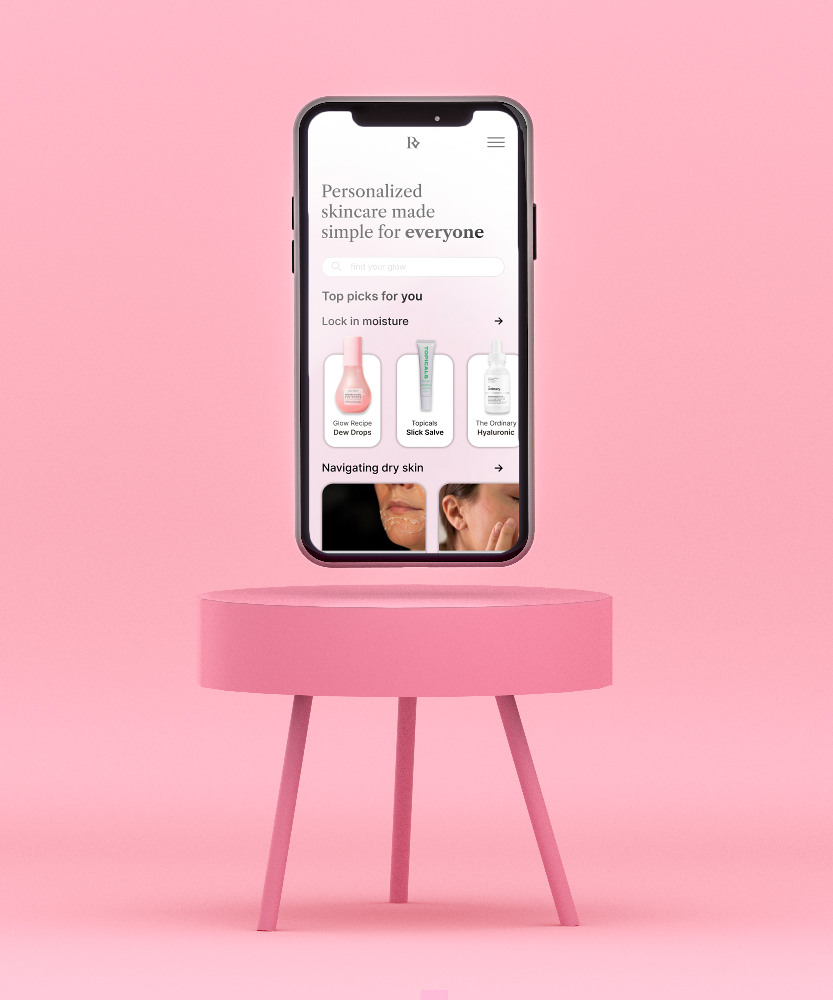
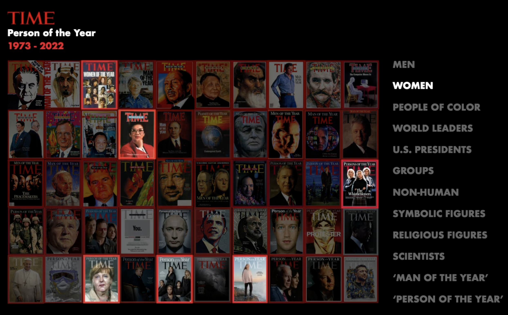
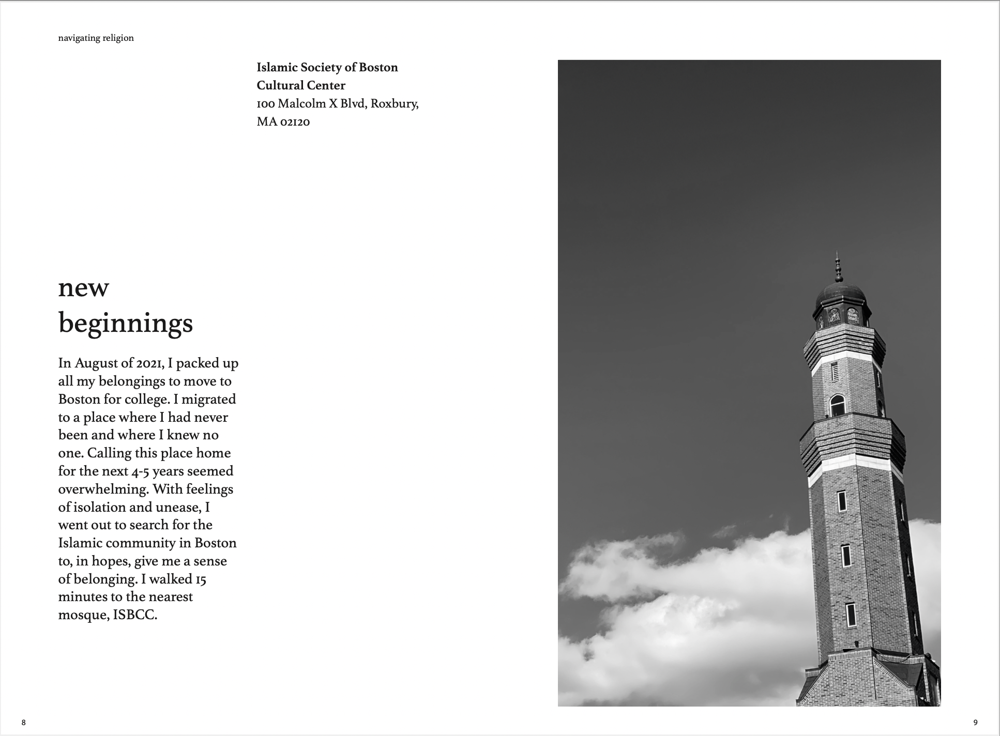

.jpg)
The Living Archive
Capstone Project • 6 Months
A hybrid physical-digital experience designed to help first-generation immigrant children bridge generational gaps and preserve their cultural heritage through structured storytelling.

Spoiler Alert
Interaction Design • 6 Months
An app designed to help college students and young adults reduce food waste by tracking expiration dates and suggesting diverse, time-saving recipes.

Radiance
Interaction Design • 6 Months
A skincare companion that helps you navigate the world of skincare with expert insights and interactive tools. The app offers unbiased product discussions, tailored skincare quizzes, and easy access to your favorite products at Sephora.
 (1).jpg)
Imposter Syndrome Toolkit
Interaction Design • 6 Months
An app aimed at helping college students navigate feelings of inadequacy and self-doubt. Rooted in extensive research and user feedback, the app provides a comforting and user-friendly experience.

Extra-Continental Biographies
Editorial Design • 2 Months
A collection of stories about refugees and migrants striving for a better life. Through four personal narratives, the book highlights the challenges, resilience, and sacrifices of those forced to leave their homes.

Mining an Archive: Time Magazine
Information Design • 1 Month
An analysis of Time's Person of the Year demographics, highlighting lack of diversity through information design. Contrasts historical biases with broader societal values.

Self Reflection Photo Journal
Personal Project • 1 Month
A personal photo journal documenting my journey of self-exploration during my first year of college. An outlet to reflect on surroundings and personal growth.